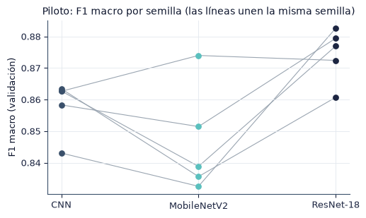

4.4 Estudio piloto y tamaño de muestra#
En esta sección estimamos la variación entre semillas con la configuración seleccionada y calculamos cuántas semillas \(R\) se requieren para detectar una diferencia de \(\delta = 0.02\) en F1 macro con potencia de 0.80.
import sys
from pathlib import Path
ROOT = next(p for p in [Path.cwd(), *Path.cwd().parents] if (p / "src" / "config.py").exists())
if str(ROOT) not in sys.path:
sys.path.insert(0, str(ROOT))
import numpy as np
import pandas as pd
import matplotlib.pyplot as plt
from IPython.display import Markdown, display
from src import config as C
from src import plots as P
from src.persist import is_done, load_pickle, save_pickle
P.setup()
C.ensure_dirs()
pd.set_option("display.precision", 4)
print("Resultados:", C.RESULTS.name, "| modelos:", ", ".join(C.MODELS))
Resultados: results | modelos: CNN, MobileNetV2, ResNet-18
RUN_TRAINING = False # True solo si se quiere entrenar desde aquí; lo recomendado es la terminal
if RUN_TRAINING:
import subprocess
# Se lanza como proceso aparte: así el DataLoader con workers funciona en Windows y
# una corrida interrumpida se reanuda igual que desde la terminal.
subprocess.run([sys.executable, "-m", "src.runner", "pilot"], cwd=ROOT, check=False)
subprocess.run([sys.executable, "-m", "src.runner", "power"], cwd=ROOT, check=False)
Método#
Para cada par de modelos \((A, B)\) y cada semilla \(s\) del piloto calculamos la diferencia pareada del F1 macro de validación, \(d_s = m_{A,s} - m_{B,s}\), y su desviación estándar \(\hat\sigma_d\). El número de semillas para una prueba pareada bilateral es
Tomamos el máximo sobre los tres pares y fijamos \(R_{final} = \min(\max(R, 6), 10)\). El mínimo de 6 se debe a que, con 5 pares, la prueba de Wilcoxon bilateral no puede alcanzar \(p < 0.0625\); el máximo de 10 corresponde al tiempo de cómputo disponible. Con \(R_{final}\) semillas, la diferencia mínima detectable es
La fórmula se obtiene al exigir que la media de las \(R\) diferencias, con error estándar \(\sigma_d/\sqrt{R}\), supere el umbral de significancia en el 80 % de los experimentos cuando la diferencia real es \(\delta\). Si MDE > δ, el experimento no tiene potencia suficiente para diferencias de tamaño δ.
pil = load_pickle(C.COMMON / "pilot.pkl")
pa = load_pickle(C.COMMON / "power_analysis.pkl")
print("F1 macro de validación por semilla (piloto):")
display(pil["tabla_ancha"].round(4))
display(pil["descriptivos"].rename(columns={"mean": "media", "std": "DE", "cv": "CV"}).round(4))
F1 macro de validación por semilla (piloto):
| model | CNN | MobileNetV2 | ResNet-18 |
|---|---|---|---|
| seed | |||
| 0 | 0.8627 | 0.8388 | 0.8770 |
| 1 | 0.8431 | 0.8325 | 0.8826 |
| 2 | 0.8635 | 0.8356 | 0.8607 |
| 3 | 0.8583 | 0.8515 | 0.8794 |
| 4 | 0.8626 | 0.8740 | 0.8724 |
| media | DE | CV | |
|---|---|---|---|
| model | |||
| CNN | 0.8580 | 0.0086 | 0.0100 |
| MobileNetV2 | 0.8465 | 0.0170 | 0.0201 |
| ResNet-18 | 0.8744 | 0.0085 | 0.0097 |
tabla_r = pa["tabla"].rename(columns={"par": "par (A − B)", "media_d": "media de d", "sd_d": "DE de d",
"R_par": "R", "shapiro_p": "Shapiro-Wilk p"})
display(tabla_r[["par (A − B)", "n_piloto", "media de d", "DE de d", "R", "Shapiro-Wilk p"]].round(4))
display(pd.Series({"R calculado (máximo)": pa["R_calculado"], "R final": pa["R_final"],
"MDE con R final": round(pa["MDE"], 4), "delta": pa["delta"],
"MDE > delta": pa["MDE_supera_delta"], "limitado por R máximo": pa["limitado_por_R_max"]},
dtype=object).to_frame("valor"))
| par (A − B) | n_piloto | media de d | DE de d | R | Shapiro-Wilk p | |
|---|---|---|---|---|---|---|
| 0 | CNN - MobileNetV2 | 5 | 0.0116 | 0.0155 | 5 | 0.6825 |
| 1 | CNN - ResNet-18 | 5 | -0.0164 | 0.0156 | 5 | 0.9214 |
| 2 | MobileNetV2 - ResNet-18 | 5 | -0.0279 | 0.0192 | 8 | 0.7613 |
| valor | |
|---|---|
| R calculado (máximo) | 8 |
| R final | 8 |
| MDE con R final | 0.019 |
| delta | 0.02 |
| MDE > delta | False |
| limitado por R máximo | False |

Resultado. La mayor desviación estándar de las diferencias pareadas en el piloto es 0.0192, de donde R = 8. Entrenamos 8 semillas por modelo. Con 8 semillas, la diferencia mínima detectable es 0.019, menor o igual que δ = 0.02. La prueba de Shapiro-Wilk no rechaza la normalidad de las diferencias en ningún par; con 5 datos su potencia es baja, por lo que reportamos tanto la t pareada como la prueba de Wilcoxon.
Conclusión#
Las 5 semillas del piloto usan la configuración definitiva y forman parte del experimento final. El número de semillas se determinó con una regla fijada antes del entrenamiento, a partir del F1 macro de validación; el conjunto de prueba no intervino en ninguna decisión de diseño.